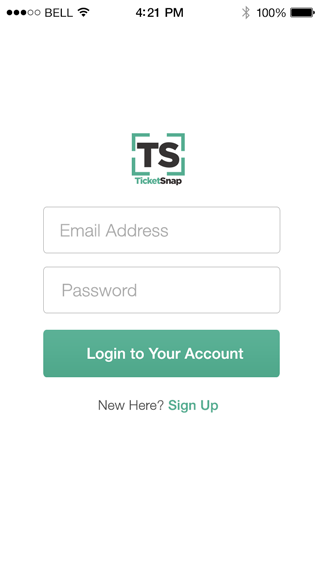
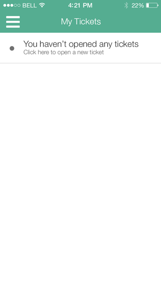
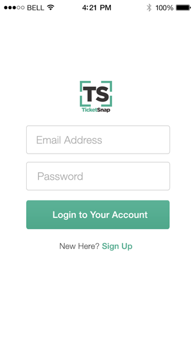
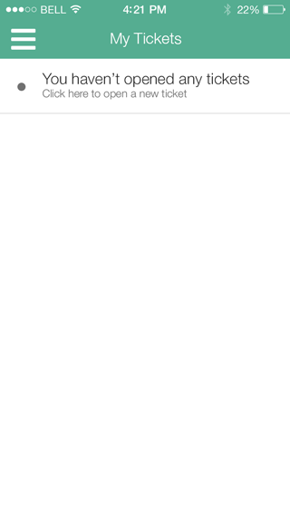

Ticketsnap
A mobile app concept.
TicketSnap is a mobile app concept by a client that I worked with while I was an intern at Kindle Interactive. The idea was to allow users to manage their traffic tickets "in a snap".
Above is the 3-step on-boarding guide for the new user.
 



Users would then be prompted to sign up for an account. After signing up and logging into their new accounts, users were directed to the "My Tickets" screen where all their new, pending, and existing tickets are displayed. New users without any tickets were prompted to open a new ticket as shown above.
Creating a ticket was accomplished in 3 steps: taking a picture of the ticket, commenting on the ticket, and submitting billing info.
Users could then go back to their "My Tickets" page to see their newly made ticket and view details on any other tickets. Clicking on the ticket number would opened up a new screen that allowed the user to view more details on their ticket as well as message their attorney.